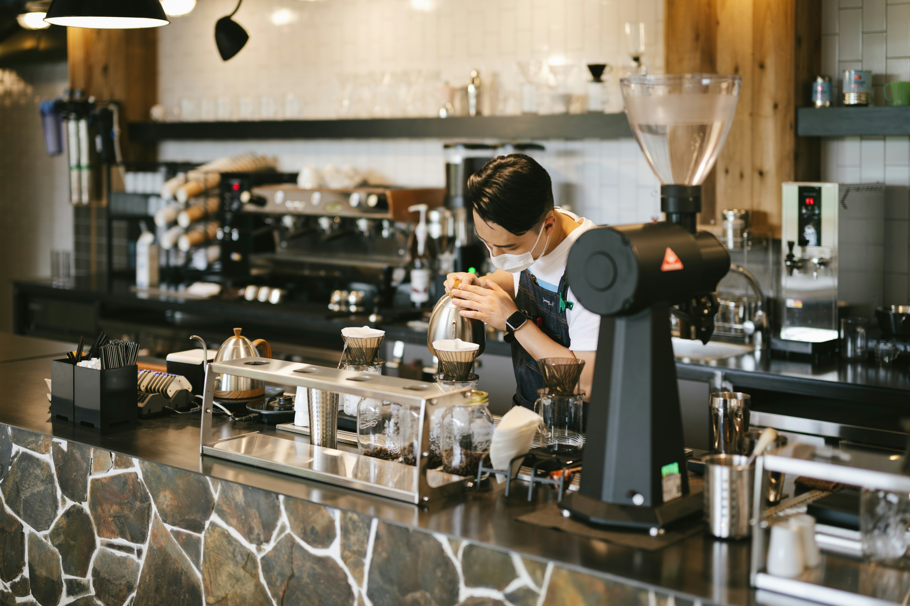
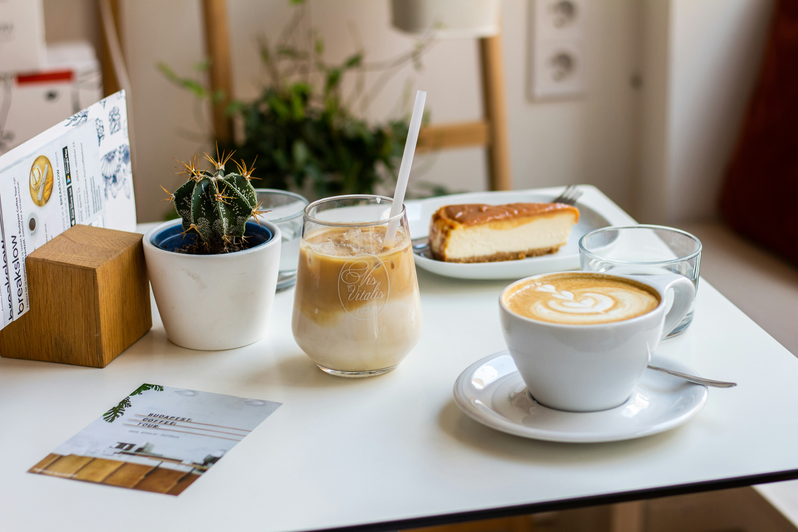
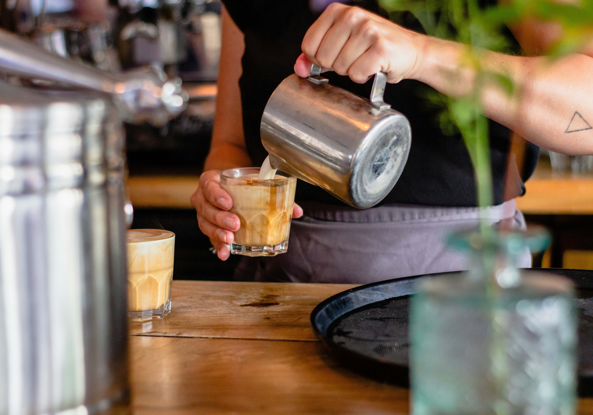
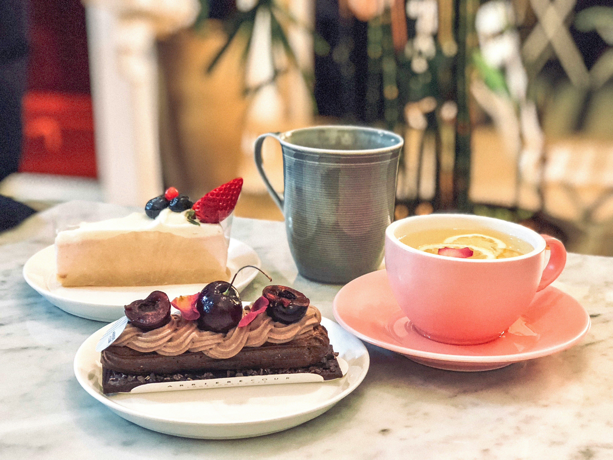
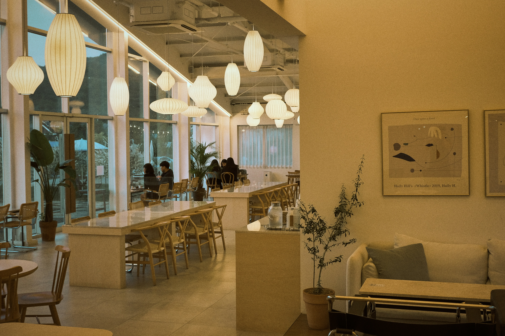
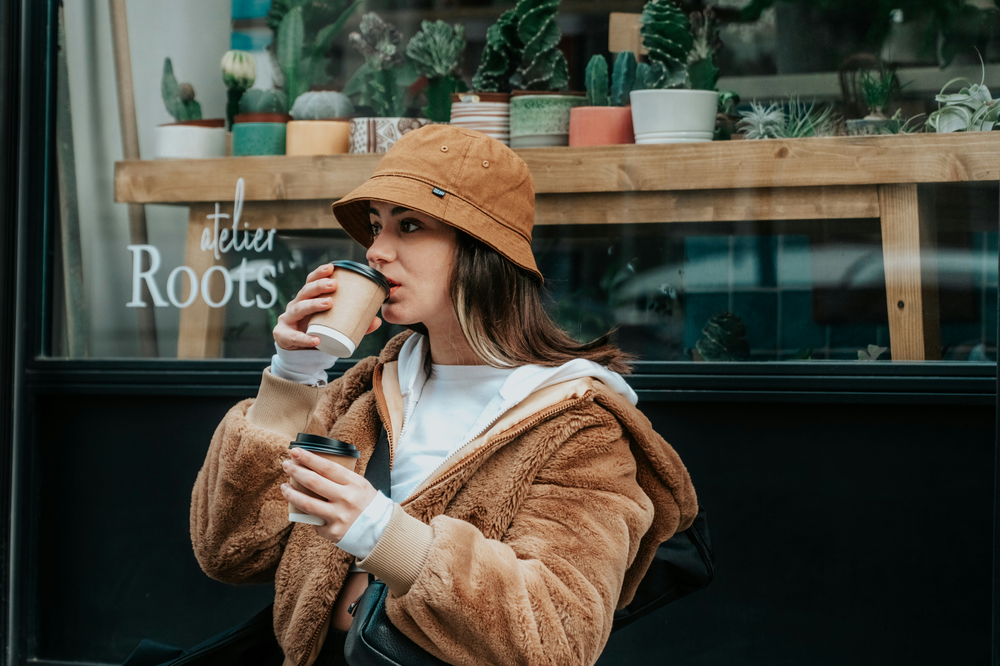
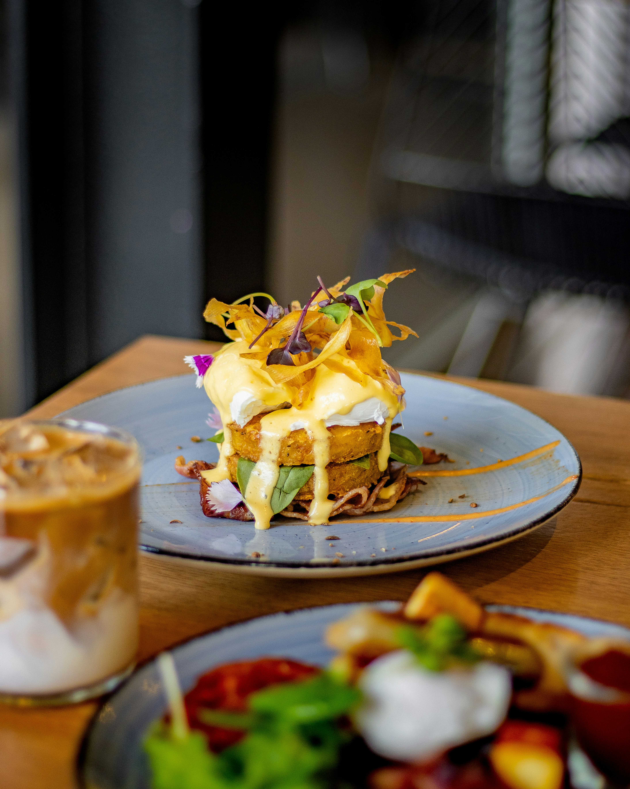
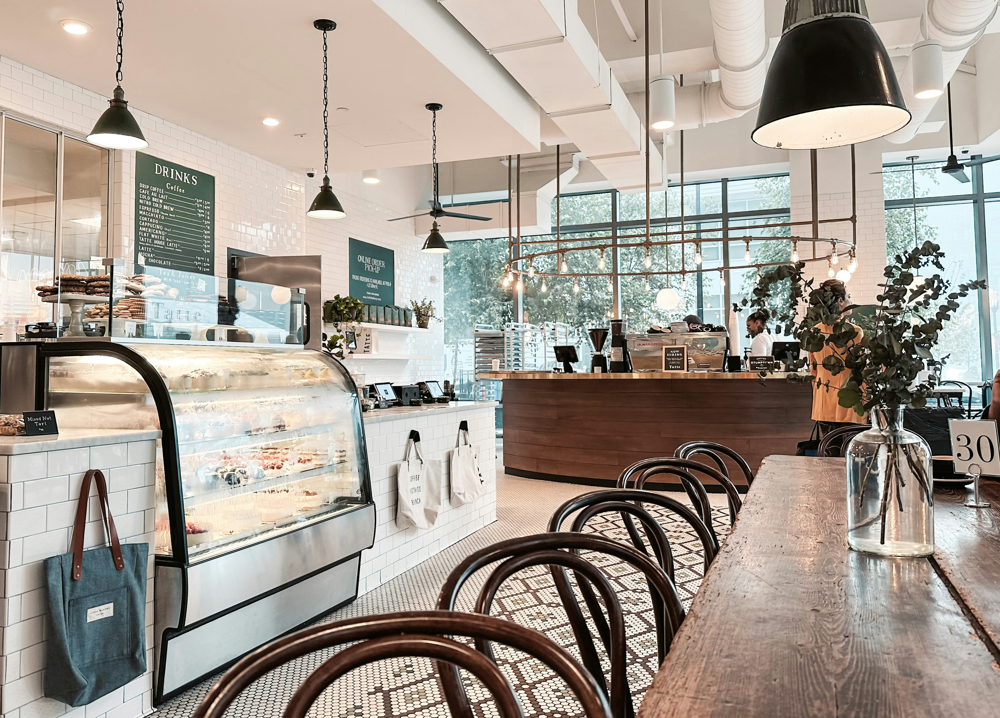
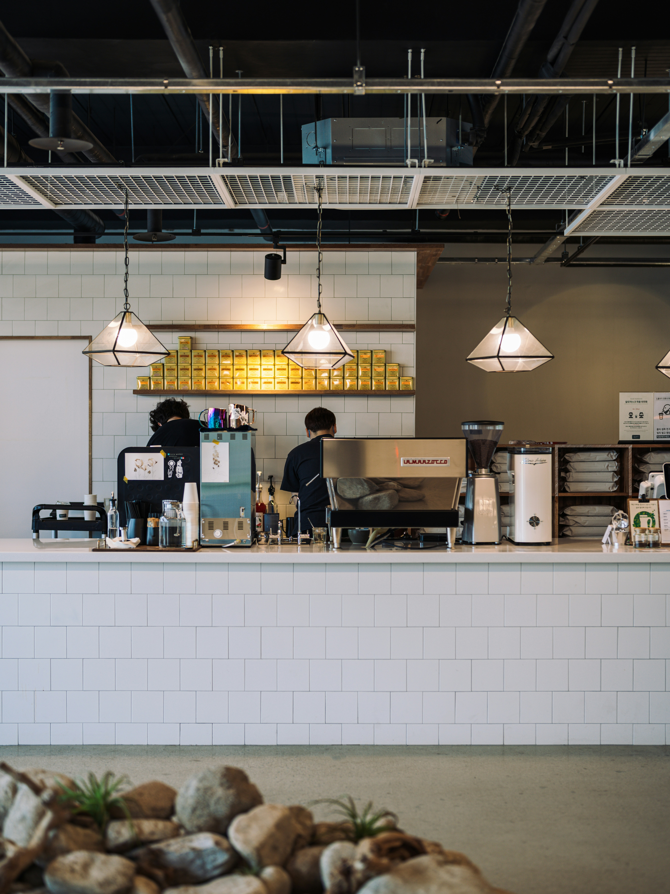

Gallery
Scenes from SOIL








土から始まる一杯。
シングルオリジンの豆を、蔵前の小さなキッチンから。
ゆっくり味わう時間をどうぞ。
SOIL COFFEEは、東京・蔵前に生まれたスペシャルティコーヒーとキッチンのお店です。
「土」を店名に冠したのは、すべてのコーヒーが大地から始まるから。
産地の風土、農家の手仕事、焙煎の技術——
そのすべてがカップの中に宿っています。
忙しい毎日の中で、ほんの少し立ち止まる時間を。
一杯のコーヒーが、あなたの一日を静かに整えてくれるはずです。

5 Countries
エチオピア、グアテマラ、コロンビア、ケニア、インドネシア。
季節ごとに厳選した産地の豆をご用意。
Self-Roasted
蔵前のアトリエで、少量ずつ丁寧に自家焙煎。
豆の個性を最大限に引き出します。
Seasonal
旬の食材を活かしたフードメニュー。
朝ごはんからランチまで、毎日通える味を。








同じ豆でも、挽き方、湯温、注ぎ方ひとつで味は変わります。
SOIL COFFEEのバリスタは、毎朝のカッピングで豆のコンディションを確認し、
その日のベストな抽出を探ります。
「今日のおすすめは？」と聞いてみてください。
きっと、まだ出会ったことのない一杯に出会えるはずです。
〒111-0051
東京都台東区蔵前4-12-8
蔵前テラス 1F
都営浅草線「蔵前駅」A4出口より徒歩2分
都営大江戸線「蔵前駅」A7出口より徒歩4分
8:00 – 18:00
Morning 8:00 – 11:00
Lunch 11:00 – 14:00
Cafe 14:00 – 18:00
水曜定休 / Closed on Wednesday
03-5678-9012
info@soil-coffee.jp
Instagram: @soil_coffee_kuramae